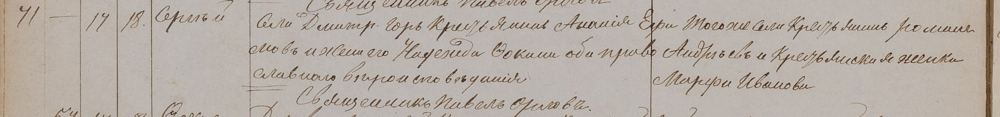
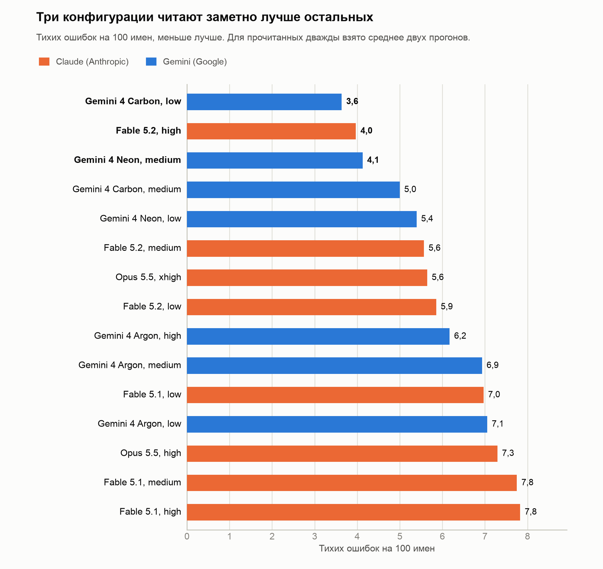
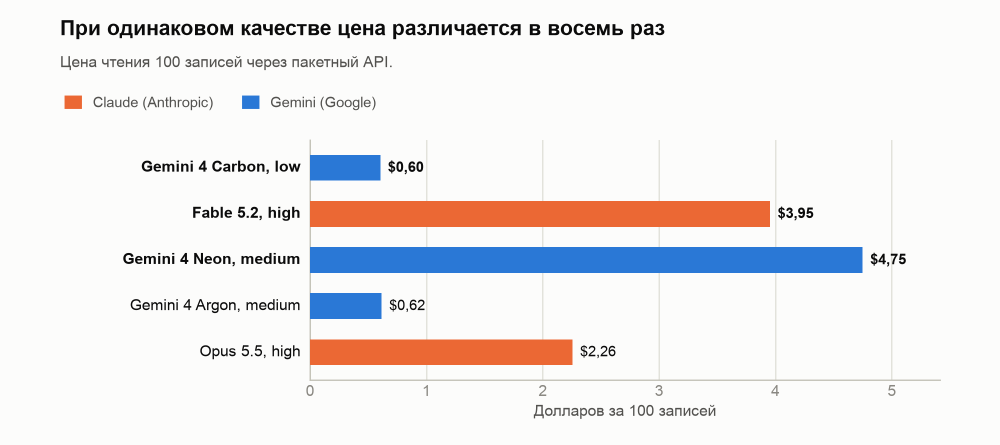
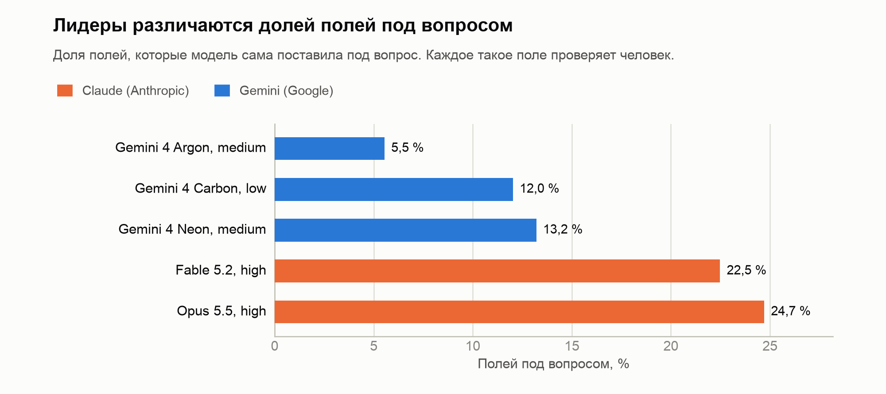
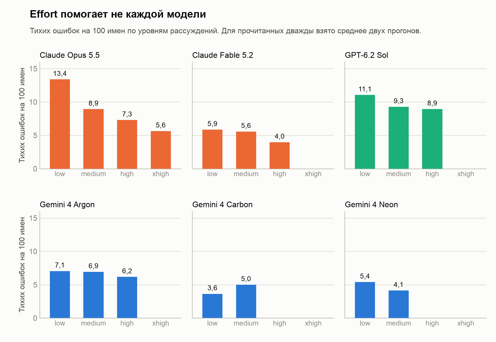
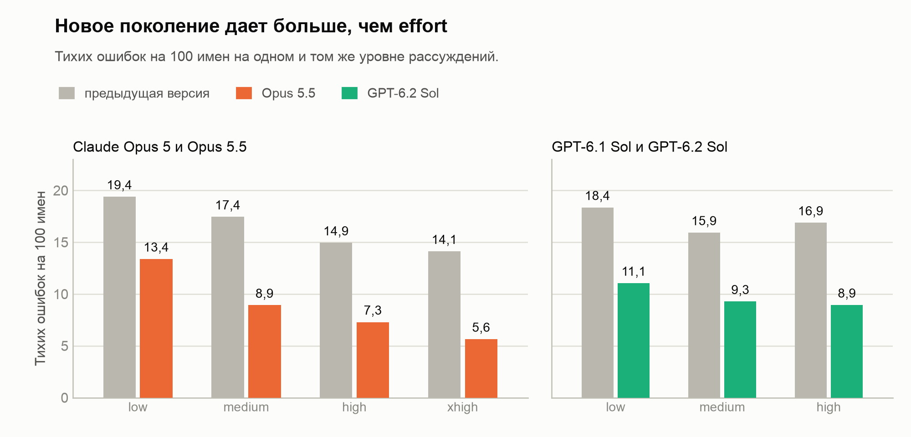
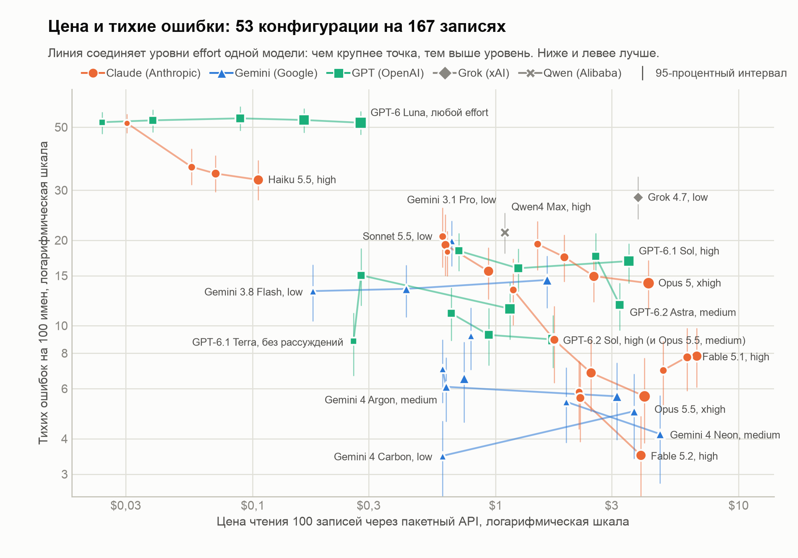

Какой моделью читать старинные документы: 53 конфигурации LLM на рукописях XVIII-XIX веков
Эта статья отвечает на вопрос, какая LLM лучше всего читает старинные документы на русском языке. Для этого я измерил качество работы передовых моделей на специально отобранном наборе записей и сравнил их по числу ошибок распознавания и по стоимости работы. Лучший результат показала Gemini 4 Carbon на low: незамеченных ошибок чтения у нее столько же, сколько у Claude Fable 5.2 и Gemini 4 Neon, а стоит она в шесть-восемь раз дешевле.
Зачем это нужно
С появлением доступных LLM в нашей жизни люди, увлеченные генеалогией, пытаются приспособить их для чтения старинных документов. Мечта о том, что машина сможет быстро прочитать сотни страниц, написанных трудным почерком в непривычной орфографии, и провести анализ, всегда была притягательной. Ранние модели справлялись с этим слабо: либо ошибок было слишком много, либо модель не понимала структуру документа. Но с развитием самих моделей и принципов их использования они стали применимы для задачи распознавания старинных рукописей. Начиная примерно с Gemini 3 Pro, по моему опыту, распознавание документов вышло на приемлемый уровень, и стало возможным встраивание LLM в цикл их чтения.
Сегодня почти все передовые модели читают такие документы и понимают их структуру. Вопрос уже не в том, можно ли использовать LLM для чтения метрических книг, а в том, какую модель брать и сколько это стоит.
Чем этот замер отличается от других
В интернете есть уже несколько сравнений LLM на исторических рукописях, но почти все они на английском и других западноевропейских языках и считают посимвольную ошибку CER (Character Error Rate). Например, статья Марка Хамфриса с коллегами, его блог и работа Crosilla и соавторов. На русском материале есть работа о печатных книгах XVIII века и статья Яндекса об их собственной системе для метрических книг.
Открытого сравнения универсальных моделей на русских метрических книгах и ревизских сказках я не нашел. Кроме того, мне нужна была метрика подробнее, чем CER: чтобы видеть, какие ошибки в именах модель сама поставила под вопрос, а какие пропустила молча. Для генеалогии важно именно это, поэтому я решил измерить все сам.
Как и что было измерено
Немного о методе измерения. Я отобрал записи из своей коллекции документов: четыре прихода, пять архивов, 1788-1886 годы. Всего 167 записей: 50 о рождении, 35 о браке, 35 о смерти и 47 дворов из ревизских сказок и исповедных росписей. Всего в них 993 человека. Часть записей я когда-то индексировал вручную. Остальные уже читали агенты Claude прямо со сканов. Перед тестом я вычитал по скану все 167, чтобы убедиться в верности эталона.
Качество съемки у снимков в наборе довольно разное. Примерно половина набора взята из электронных читальных залов архивов, это сканы. Остальное - это фотографии, в том числе снятые с экрана монитора, с муаром.
Модель читает вырезанный кадр одной записи. Вместе с кадром модель получает общую инструкцию: писать как в источнике, в дореформенной орфографии, менять только падеж, неразборчивое не угадывать и ставить "?", сомнительные поля перечислять отдельным списком, ответ возвращать в JSON.
Вот как это выглядит на одной записи о рождении 1874 года. Кадр, который получает модель:

И ответ Gemini 4 Carbon на low. Пустые поля и место жительства я убрал, чтобы пример был короче:
{
"record": {"record_num": "71", "gender": "male", "b_day": "17", "k_day": "18"},
"persons": [
{"slot": "child", "name": "Сергѣй"},
{"slot": "father", "name": "Ананія", "patronymic": "Ефимовъ", "status": "крестьянин"},
{"slot": "mother", "name": "Надежда", "patronymic": "Ѳокина", "status": "жена крестьянина"},
{"slot": "godparent", "name": "Романъ", "patronymic": "Андрѣевъ", "status": "крестьянин"},
{"slot": "godparent", "name": "Марѳа", "patronymic": "Иванова", "status": "крестьянская женка"},
{"slot": "priest", "name": "Павелъ", "surname": "Орловъ", "status": "священник"}
],
"doubtful": ["persons[5].surname"]
}
Имена в этой записи прочитаны верно. В последней строке модель сама поставила под вопрос одно поле: фамилию священника.
В конце скрипт теста ставит оценку, LLM-судьи нет. Повторный запуск на тех же ответах дает те же числа. Скрипт сравнивает прочитанное с эталоном. Мелкие расхождения в орфографии прощаются: Сергѣевъ и Сергеев считаются одним чтением, Димитрій и Дмитрій, Дарья и Дарія считаются вариантом одного имени. Ошибкой чтения считается получение другого имени.
По итогам чтения вычисляются следующие метрики. Ошибки считаются на 100 полей имен: имя, отчество и фамилия, всего в наборе около 1700 таких полей.
- Тихие ошибки: неверное имя, которое модель не поставила под вопрос. Это главное число. Такую ошибку можно заметить только при полной вычитке.
- Все ошибки: неверные имена, под вопросом и без него.
- Поля под вопросом: доля полей, в которых модель сама усомнилась. Каждый вопрос стоит времени человека на вычитку, поэтому модель, которая перестраховывается и ставит под вопрос все подряд, работы не экономит.
- Цена: сколько стоит прочитать 100 записей.
Этот тест не оценивает посимвольное распознавание документа с точностью до буквы, а только правильное чтение имен, отчеств и фамилий, а также способность модели подмечать неуверенное чтение.
Метрику посимвольной ошибки CER, как в других исследованиях, я тоже посчитал по тем же ответам, и порядок моделей она повторяет почти точно. Но она не отличает не прочел и оставил "?" от прочел неверно и промолчал. И цену ошибки CER передает плохо. Больше четверти неверных имен отличаются от верных одной-двумя буквами: Марья и Марѳа. По буквам это мелочь, а человек другой.
Доверительные интервалы посчитаны методом повторных выборок (бутстрепом) по записям. Модель читает набор один раз, а дальше из ее готовых ответов много раз случайно вытягивается 167 записей с повторами, и ошибки на каждой такой выборке считаются заново. Интервал показывает, насколько результат зависит от состава набора. Разброс между запусками одной модели он не учитывает, его я мерил отдельно. На моем наборе при одном прогоне на конфигурацию различима разница примерно от 2,5 ошибок на 100 имен, меньшие разницы считались просто шумом. Кроме того, одна и та же конфигурация читает по-разному от прогона к прогону: шесть конфигураций я прогнал дважды, и второй прогон отличался от первого на 0,1-1,7 тихой ошибки.
Результаты: модели и effort
На данный момент я прогнал тесты на 53 конфигурациях. Ниже основная часть таблицы, она отсортирована по тихим ошибкам. Полная таблица будет под спойлером в конце.
Для оценки стоимости я использовал самую дешевую цену, которую можно получить на конкретную модель (например, через batch API). Цены ноябрьские. С 1 декабря Google вдвое поднимает цены Gemini 4 Argon и Carbon, а с 1 января и Gemini 3.8 Flash.
Шесть конфигураций прочитаны дважды. Для них в таблице стоит среднее двух прогонов, в последнем столбце у них двойка.
| Модель | effort | Тихих ошибок | Всех ошибок | Полей под вопросом | $ за 100 записей | Прогонов |
|---|---|---|---|---|---|---|
| Gemini 4 Carbon | low | 3,6 | 10,7 | 12,0 % | 0,60 | 2 |
| Claude Fable 5.2 | high | 4,0 | 15,0 | 22,5 % | 3,95 | 2 |
| Gemini 4 Neon | medium | 4,1 | 11,5 | 13,2 % | 4,75 | 2 |
| Gemini 4 Carbon | medium | 5,0 | 10,1 | 9,6 % | 3,71 | 1 |
| Gemini 4 Neon | low | 5,4 | 11,9 | 10,8 % | 1,95 | 1 |
| Claude Fable 5.2 | medium | 5,6 | 19,1 | 25,8 % | 2,23 | 1 |
| Claude Opus 5.5 | xhigh | 5,6 | 19,0 | 26,0 % | 4,10 | 1 |
| Gemini 4 Argon | high | 6,2 | 10,5 | 6,9 % | 3,07 | 2 |
| Gemini 4 Argon | medium | 6,9 | 11,3 | 5,5 % | 0,62 | 2 |
| Claude Fable 5.1 | low | 7,0 | 21,1 | 22,8 % | 4,89 | 1 |
| Gemini 4 Argon | low | 7,1 | 11,8 | 5,8 % | 0,60 | 1 |
| Claude Opus 5.5 | high | 7,3 | 21,4 | 24,7 % | 2,26 | 2 |
| Claude Fable 5.1 | high | 7,8 | 19,2 | 18,1 % | 6,73 | 1 |
| GPT-6.1 Terra | без рассуждений | 8,8 | 30,1 | 33,2 % | 0,26 | 1 |
| Claude Opus 5.5 | medium | 8,9 | 22,7 | 23,9 % | 1,74 | 1 |
| GPT-6.2 Sol | high | 8,9 | 22,4 | 19,8 % | 1,72 | 1 |
| Gemini 4 Hydrogen | low | 9,2 | 15,3 | 7,9 % | 0,79 | 1 |
| GPT-6.2 Sol | medium | 9,3 | 25,0 | 21,4 % | 0,94 | 1 |
| GPT-6.2 Sol | low | 11,1 | 24,6 | 17,0 % | 0,66 | 1 |
| GPT-6.1 Terra | high | 11,5 | 27,3 | 25,7 % | 1,15 | 1 |
| GPT-6.2 Astra | medium | 11,8 | 25,5 | 19,4 % | 3,24 | 1 |
| Gemini 3.8 Flash | low | 13,2 | 22,1 | 10,8 % | 0,18 | 1 |
| Claude Opus 5.5 | low | 13,4 | 28,4 | 26,1 % | 1,18 | 1 |
| Claude Opus 5 | xhigh | 14,1 | 28,5 | 21,7 % | 4,25 | 1 |
| Claude Opus 5 | high | 14,9 | 29,9 | 22,9 % | 2,54 | 1 |
| Claude Sonnet 5.5 | high | 15,6 | 36,0 | 36,3 % | 0,93 | 1 |
| GPT-6.1 Sol | high | 16,9 | 36,9 | 27,2 % | 3,53 | 1 |
| GPT-6.2 Astra | low | 17,6 | 27,8 | 12,6 % | 2,58 | 1 |
| Qwen4 Max | high | 21,3 | 44,5 | 31,9 % | 1,09 | 1 |
| Grok 4.7 | low | 28,3 | 45,5 | 21,4 % | 3,85 | 1 |
| Claude Haiku 5.5 | high | 32,6 | 59,1 | 39,1 % | 0,11 | 1 |
| GPT-6 Luna | xhigh | 51,9 | 81,8 | 32,1 % | 0,28 | 1 |
Что из всего этого следует?
1. Три конфигурации читают заметно лучше остальных. Gemini 4 Carbon на low, Claude Fable 5.2 на high и Gemini 4 Neon на medium оставляют 3,6-4,1 тихой ошибки на 100 имен. У следующей группы 5-8: это Argon, Opus 5.5 на high и xhigh, Fable 5.1, Fable 5.2 на low и medium. Одному прогону я не поверил и каждую из трех прочитал дважды. Разница с Argon medium по двум прогонам с каждой стороны: 3,3 ошибки у Carbon, 3,0 у Fable и 2,8 у Neon. Между собой три лидера не различаются.

2. При одинаковом качестве цена различается в восемь раз. Carbon low стоит 0,60 доллара за 100 записей, столько же, сколько Argon. Fable 5.2 high стоит 3,95, Neon medium 4,75. С декабря Carbon подорожает до 1,20, и разрыв сократится до трех-четырех раз.

3. Лидеры различаются долей полей под вопросом. Argon ставит под вопрос 6-7 % полей, Carbon и Neon 10-13 %, Opus и Fable примерно четверть. Человеку после Argon проверять меньше всего. Зато тихих ошибок Argon medium оставляет на 3 больше, чем Carbon low.

4. Effort помогает не каждой модели.
- У Opus 5.5 качество растет с каждым уровнем, но растет и цена: от 1,18 до 4,10 доллара.
- У Fable 5.2 low и medium не различаются, а high заметно лучше обоих.
- У GPT-6.2 Sol high не лучше medium.
- У Argon разница между medium и high в пределах шума, а high стоит впятеро дороже.
- У Gemini 4 Carbon medium стоит вшестеро дороже и читает не лучше, чем low.
- У Gemini 4 Neon medium немного лучше, чем low.
- У GPT-6.1 Terra тихих ошибок меньше всего в режиме без рассуждений, но под вопросом при этом треть полей.
- У Sonnet effort меняет мало.

5. Новое поколение дает больше, чем effort. Предыдущий Opus 5 при той же цене на каждом уровне effort оставляет на 6-9 тихих ошибок больше, чем Opus 5.5. Opus 5 на xhigh читает не лучше, чем Opus 5.5 на low: их разница в пределах шума. У OpenAI то же самое. GPT-6.2 Sol, вышедший в ноябре, на high делает 8,9 тихой ошибки против 16,9 у GPT-6.1 Sol и стоит вдвое дешевле.

6. Цена качество не предсказывает.
- Fable 5.1 стоит в 2-3 раза дороже, чем Opus 5.5 high, а читает так же.
- GPT-6.1 Sol за 3,53 доллара делает 17 тихих ошибок.
- GPT-6.2 Astra на medium за 3,24 доллара читает не лучше, чем GPT-6.2 Sol на medium за 0,94.
- Gemini 4 Carbon на medium за 3,71 доллара делает 5,0 тихой ошибки, на low за 0,60 доллара 3,6.
- Gemini 4 Hydrogen на low за 0,79 доллара делает 9 тихих ошибок, в два с половиной раза больше, чем Carbon low за 0,60.
- Флагман Alibaba Qwen4 Max на high делает 21 тихую ошибку, столько же, сколько Sonnet на low.
- Grok 4.7 делает 28. На отладочной выборке Grok был слаб на всех уровнях, поэтому в основной прогон я взял только самый дешевый.

7. Маленькие модели для этой задачи не годятся. У Haiku 33-52 тихие ошибки на 100 имен, у GPT-6 Luna 52-54. Это каждое второе или третье имя.
Заключение
Что бы я советовал по итогам моих измерений для чтения русских рукописей XIX века:
- Брать Gemini 4 Carbon на low. Незамеченных ошибок у него столько же, сколько у Fable 5.2 на high и Gemini 4 Neon на medium, но те стоят в шесть-восемь раз дороже.
- Если пометок должно быть меньше, брать Gemini 4 Argon на medium.
- Из моделей Claude брать Fable 5.2 или Opus 5.5 на high. Они ставят под вопрос вчетверо больше полей, чем Argon, и стоят в четыре-шесть раз дороже.
- Effort выше low у Carbon и выше medium у Argon не оплачивать: лучше не станет.
- Маленькие модели не использовать совсем.
- Вычитывать в любом случае: у лучших конфигураций остаются 4-7 незамеченных ошибок на 100 имен.
Тест идет на готовых кадрах одной записи, поэтому в реальных условиях результаты могут быть как ниже, так и выше. Набор, по которому я гонял тесты, взят из моего корпуса, его записи хранятся как код DSL, все инструменты для которого собраны в библиотеке verso.